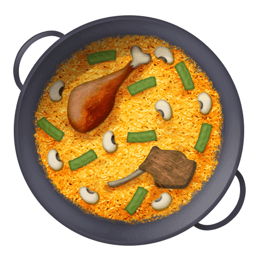

La recette pour
personnes
Plat coloré mêlant riz, fruits de mer et épices. Symbole de la cuisine espagnole, originaire de Valencienne.
La paëlla est un plat chaud souvent accompagné des meilleurs vins d'Espagne. Créé aux
alentours du XVIIIème siècle dans la communauté de Valencienne, la paëlla est désormais un plat
incontournable de la cuisine espagnole.
Principalement composée de riz et originairement accompagné d'artichaut, d'haricots verts, de lapin et
de poulet. Aujourd'hui, la paëlla est connue sous différentes recettes chacune tout aussi
savoureuses que les autres.
La paëlla provient de la région de Valence. Cliquez sur la zone rouge pour en découvrir un peu plus sur cette région.

Musée du Riz - 2.00€
Découvez l'histoire cette céréale et de son influence sur le développement et la culture valencienne depuis plus de mille ans.
Calle del Rosario, 3
46011, Valencia,
España

Dégustation de vins - 35.00€
Améliorez votre connaissance du vin lors d'une dégustation dirigée par un sommelier professionnel.
Vivinos, Carrer dels Flassaders, 19, Ciutat Vella,
08003 Barcelona,
Espagne

Estimation de la consommation de paëlla au fur et à mesure des années en Espagne.
| Année | Consommation (en milliers de tonnes) |
|---|---|
| 2022 | 566.62 |
| 2023 | 572.22 |
| 2024 | 578.57 |
| 2025 | A venir... |
"La paëlla est un ragoût du dimanche que l'on prépare à la maison, car il faut beaucoup de temps pour la réaliser. "
- Paco Pérez
En 2016 a été créé l'émoji paëlla. Il est disponible sur l'ensemble des ordinateurs est smartphones.
